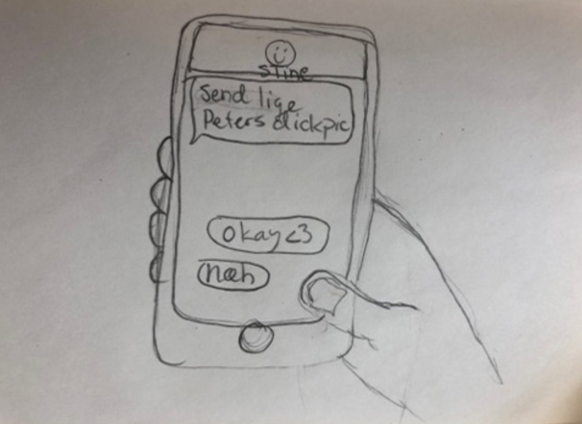
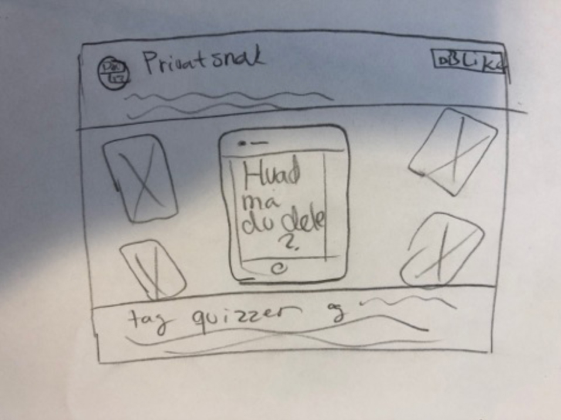
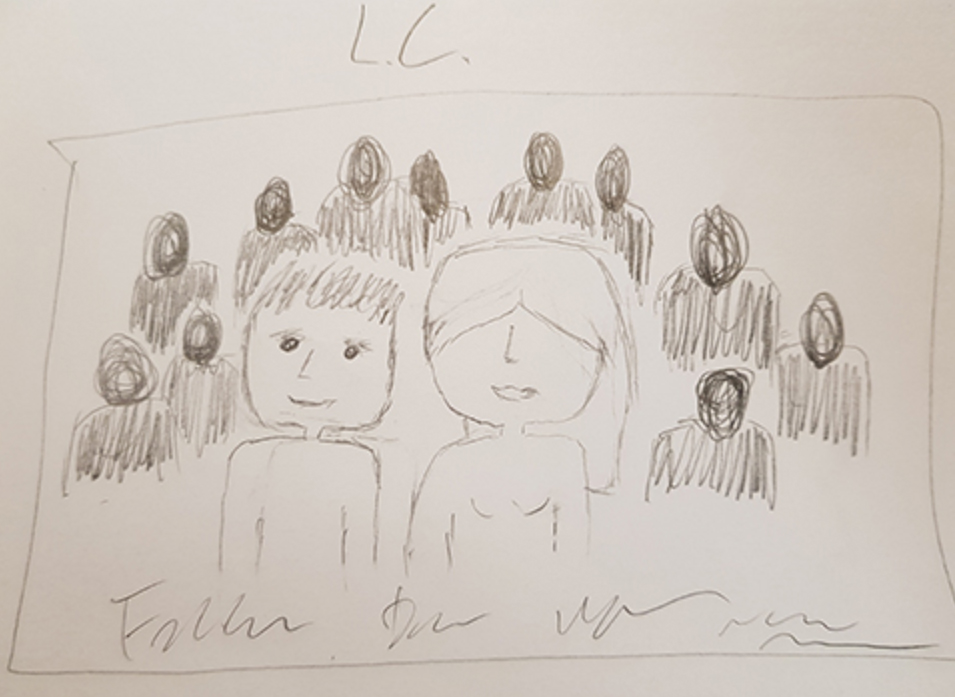
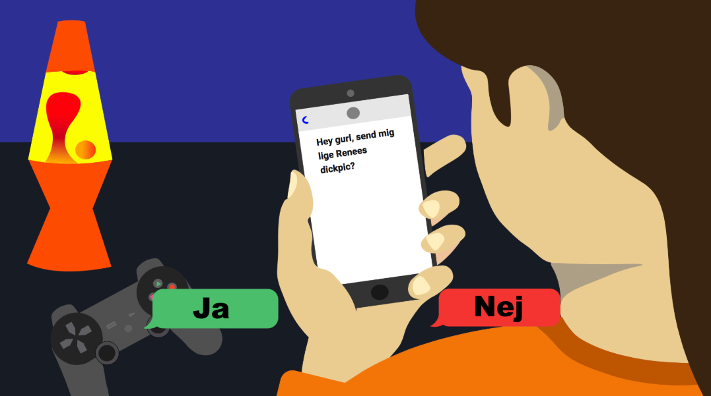
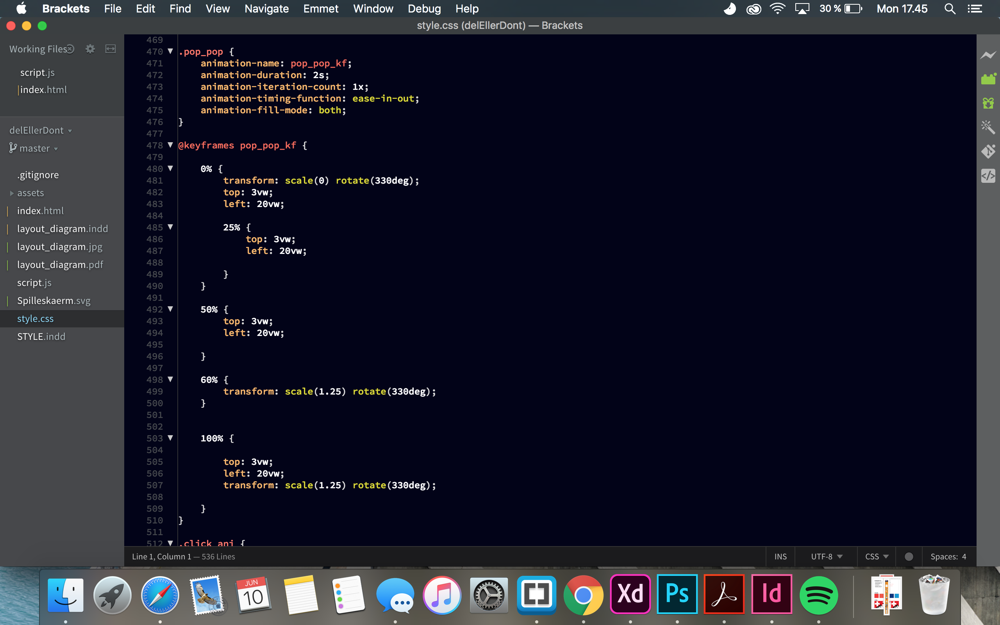
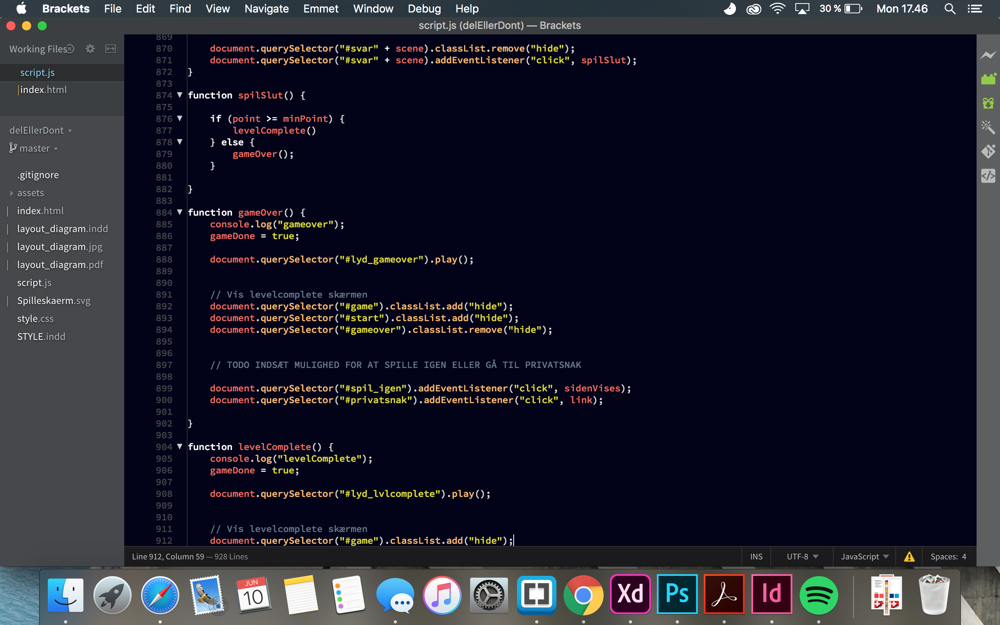

02.05.03
Færdig opgave
 Link til Opgave
Link til Opgave
02.05.03 samler op på tema 02 og introducerede nye samarbejdsredskaber. SCRUM er et simpelt projektledelses værktøj, SCRUM hjælper med at danne et overblik i gruppen over hvert medlems arbejdsprocess.
Opgaven I 02.05.03, bestod I en case fra Sex & Samfunds datterselskab Privat Snak. Privat Snak prøver at vejlede børn og unge i hvad der er tilladt at dele på internettet, casen bestod i at animere et spil der kunne belyse problemet.






